Il sistema di gestione dei casi con intelligenza documentale integrata — per gli avvocati che vogliono riavere le proprie serate.
IRONSTICK è un sistema completo per lo studio legale, per Windows e tablet Android: clienti, casi, prove, scadenze, e-mail, produzione di documenti — con uno strato di IA che conosce davvero i tuoi fascicoli. Autenticamente paneuropeo — e costruito deliberatamente per la tradizione di civil law dell'Europa continentale, il mondo delle leggi codificate: disponibile in undici lingue — inglese, tedesco, francese, italiano, spagnolo, rumeno, portoghese, olandese, turco, ucraino e russo — il sistema riconosce e sviluppa automaticamente le giurisdizioni giuridiche, amplia dinamicamente la propria banca dati giuridica e la mantiene aggiornata, e si adatta alle esigenze e alle abitudini particolari del suo utente. Offline-first, e i tuoi dati non lasciano mai il tuo computer senza il tuo consenso.
| Esigenza | Cosa offre IRONSTICK | Approfondisci |
|---|---|---|
| Risparmiare tempo, fatturare ore | Bozze di atti, sintesi dei casi e dossier nascono dal fascicolo stesso — lei verifica invece di cercare. Testato: 3.000 pagine di atti e allegati, timbrate e paginate, in un unico PDF — in meno di 20 minuti. A mano è un lavoro da mezza giornata a una giornata intera. | Capitolo 3, 5 |
| Nessuna scadenza mancata | La campanella nella barra dei menu diventa arancione quando qualcosa è in scadenza e rossa quando è critica — sempre visibile. I casi senza attività da 14 giorni vengono elencati, perché nulla si spenga in silenzio. | Capitolo 1 |
| Segreto professionale e GDPR | La banca dati è cifrata sul suo supporto; il fornitore del software non vede mai i dati dei clienti. Consenso prima di ogni chiamata esterna all'IA, pseudonimizzazione, registro di audit e la dichiarazione GDPR sui flussi di dati con una clausola tipo per la sua informativa ai clienti. Tramite i Bridge IA desktop, l'IA del suo account lavora in diretta sul fascicolo. | Capitolo 9, 11 |
| Fiducia nel fornitore | Lo studio non dipende dal data center di nessun altro: il fascicolo risiede sul suo hardware, e nemmeno un guasto totale del server o di Internet ferma lo studio. La licenza viene verificata offline sul suo computer, e tutto ciò che registra lo esporta in qualsiasi momento. | Capitolo 8, 13 |
| Costi prevedibili | Licenza modulare: acquista solo i componenti che usa e li integra in seguito tramite chiave di licenza. L'IA funziona sui suoi account (di norma 20–40 € al mese ciascuno, dove serve un abbonamento) invece di canoni mensili a tre cifre per postazione. Prezzi su richiesta. | Capitolo 9 |
| Integrazione nei flussi esistenti | Lo scanner o la fotocopiatrice deposita in una cartella, e IRONSTICK prende il testimone da lì. La casella e-mail viene scaricata in background e assegnata ai casi. Gli appuntamenti compaiono nel calendario di qualsiasi telefono; il tablet Android lavora sullo stesso fascicolo. | Capitolo 1, 15 |
| Avvio senza fatica | Nessuna migrazione «big bang»: i nuovi casi vivono in IRONSTICK dal primo giorno, e i vecchi li trasferisce solo quando conviene. Con l'OCR integrato un documento viene registrato in media in quindici secondi. Formazione in sede, un giorno per modulo. | — |
| Conoscere la controparte, il giudice e il contesto | OSINT con un clic su ogni persona e ogni società, profili dei giudici con la valutazione delle loro decisioni e un'analisi delle relazioni su tutti i fascicoli — chi è collegato a chi, e perché. Gli atti possono essere calibrati sul giudice che li leggerà. | Capitolo 4 |
IRONSTICK conviene ovunque si incontrino molti documenti, molte parti e scadenze rigide — e dove i dati dei clienti non devono lasciare lo studio. Ne traggono il massimo vantaggio gli studi che oggi perdono ore a cercare, digitare e assemblare.
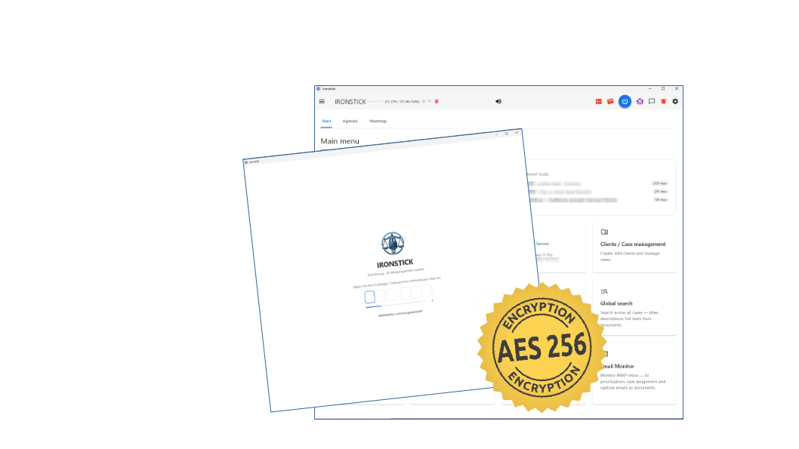
Parte I — La pratica quotidiana
Apri IRONSTICK e la giornata è già in ordine. La schermata iniziale mostra ciò che è in scadenza e ciò che è caduto nel silenzio; l'Agenda unisce tutto ciò che è accaduto in tutti i mandati — i depositi di ieri, le e-mail notturne, le nuove udienze, foto, trascrizioni — in un unico flusso cronologico. Vedi l'intero studio senza aprire un solo caso. E oltre a questo: il briefing giornaliero separato ti dà una breve panoramica parlata della giornata — mentre ti vai comodamente a prendere un caffè.
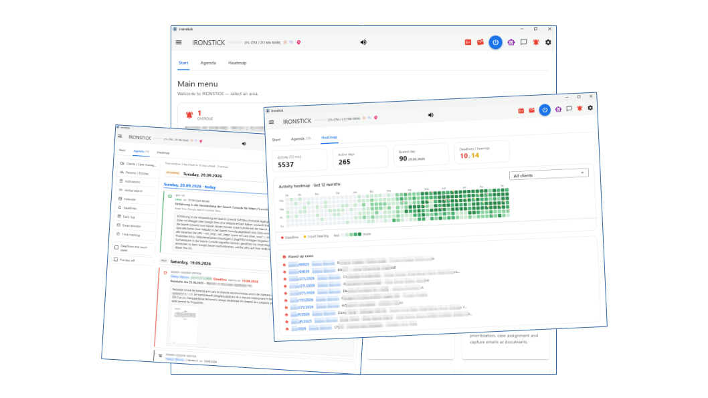
L'assistente del caso risponde alle domande sui tuoi fascicoli come farebbe un bravo collaboratore — solo che ha letto tutto, e risponde in pochi secondi:
Ogni risposta è fondata su documenti reali — risultati numerati che puoi aprire con una parola («apri 1», «leggi 1 ad alta voce»). Le domande di routine ricevono risposta da uno strato locale sul tuo computer, senza che alcun dato lasci il dispositivo; le analisi più impegnative passano all'IA esterna solo con il tuo consenso. L'assistente parla la tua lingua — tutte undici — e può essere guidato interamente a voce, a mani libere, con riconoscimento vocale offline e lettura ad alta voce.
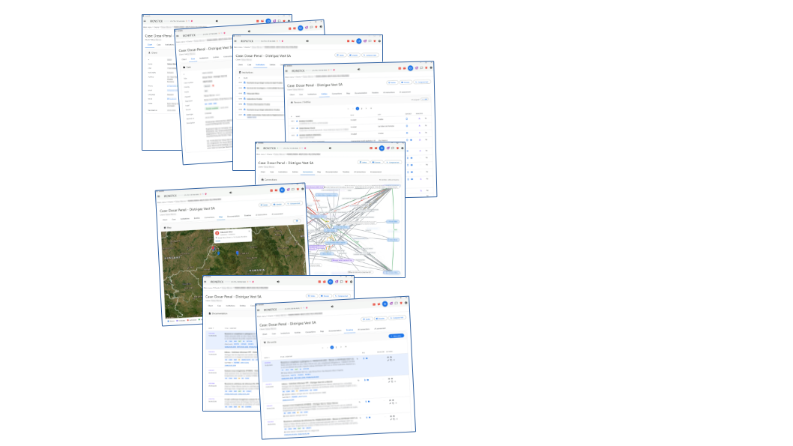
Questo è il fiore all'occhiello. Scrivi atti e lettere in dialogo con l'IA — nella chat propria di IRONSTICK (sulla tua chiave API) o attraverso il Bridge IA desktop (Claude, ChatGPT, Qwen o Kimi Desktop). Componi testo › Con l'aiuto dell'IA in un caso apre la chat con il caso e il documento già indicati; da lì l'IA lavora come un collaboratore sul fascicolo dal vivo: anagrafica del cliente, la cronaca del caso con i testi integrali dei documenti, le scadenze, gli allegati correlati, l'elenco degli allegati, le tue istruzioni sul caso — e persino la storia recente dei casi limitrofi del cliente, perché la risposta della controparte spesso si trova nel fascicolo parallelo. Fa domande quando qualcosa è aperto invece di comprimere il tuo caso in maschere fisse.
Ore di studio del fascicolo e di stesura diventano minuti di revisione — leggi, affini, firmi.
Il cuore di IRONSTICK è l'intelligenza delle prove. Tutto ciò che acquisisci — PDF scansionati, e-mail con allegati, cronologie WhatsApp, foto, registrazioni audio — diventa testo integrale ricercabile. L'OCR è integrato (inglese, tedesco, francese, italiano, spagnolo, rumeno, portoghese, olandese, turco, ucraino e russo — nulla da installare) e la ricerca è deliberatamente indulgente: segni diacritici, tipici errori di scansione e nomi parziali trovano comunque il loro bersaglio.
La rete si costruisce da sé. Un'IA desktop collegata tramite il Bridge legge il fascicolo, ricerca le parti su internet e archivia ogni persona, azienda, istituzione e connessione che trova come proposta approvabile con un clic; un auto-linker in background lega ogni parte a ogni caso i cui documenti la nominano; e l'Universo trasforma l'intero inventario in una rete 3D navigabile con cluster rilevati automaticamente — i gruppi densi e fittamente intrecciati pulsano di rosso. In poche ore hai in mano una rete altamente condensata di persone e aziende su tutto il tuo set di dati — impossibile a mano — e la visualizzazione punta dritta al cluster.
Cosa significa questo nella pratica — due giorni, misurati. Nell'arco di due giornate lavorative del settembre 2026 una singola IA desktop collegata tramite il Bridge ha letto i fascicoli di un procedimento con più parti, ha ricercato le parti su internet e ha archiviato ciò che ha trovato; l'avvocato non ha fatto altro che leggere e cliccare. Il risultato, contato successivamente nella banca dati: 293 persone e aziende, 11 istituzioni, 811 relazioni e 733 collegamenti parte-caso — 2.487 decisioni di revisione in totale, il 97 per cento accettate, il 3 per cento respinte al gate. A mano — fonti lette, ogni persona identificata, ogni connessione verificata, ogni record digitato — sono circa 310 ore di lavoro: otto settimane a tempo pieno per una persona, o mezzo anno accanto ai mandati dal vivo. E le ore non sono nemmeno il punto. Nessuno tiene in testa 300 nomi, 800 connessioni e una dozzina di liste di conoscenze; i cluster che brillano di cremisi nell'Universo sono invisibili nello schedario. Il 3 per cento è il motivo per cui il gate di revisione esiste: ognuno di essi sarebbe stato un record sbagliato se fosse stato scritto direttamente.
E la stessa macchina disegna la rete dei casi di un cliente: i casi come esagoni, raggruppati secondo le tue pratiche, connessi dove condividono parti, si citano a vicenda come allegato o nominano il numero di caso dell'altro — con quattro strumenti di IA che leggono esattamente questa immagine.
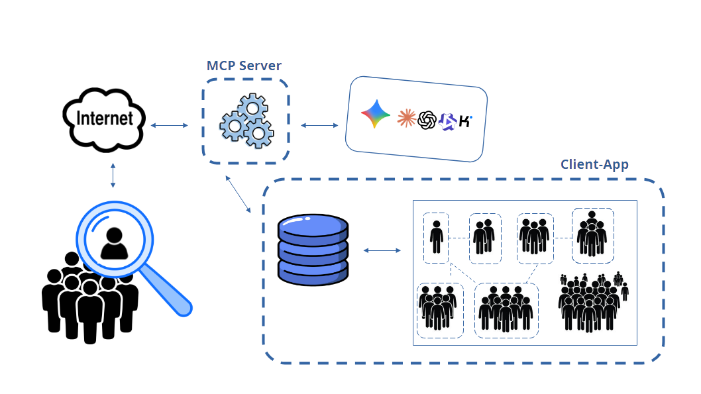
L'OSINT (open-source intelligence) — la valutazione sistematica di fonti liberamente accessibili — è prassi standard presso le autorità investigative e gli studi legali commerciali, ma è lavoro manuale: ognuno ricerca in modo diverso, e ognuno dimentica qualcosa di diverso. IRONSTICK lo trasforma in una procedura fissa. L'IA fornisce nome, città, distretto, paese e se si tratta di una persona fisica o giuridica — l'applicazione fa il resto da sola, allo stesso modo ogni volta, senza lacune:
Il risultato in uno o due minuti: un profilo di ricerca che costerebbe a un collaboratore mezza giornata — e che è altrettanto completo per la trecentesima persona quanto per la prima. Vengono valutate solo fonti pubblicamente accessibili.
Non conosciamo alcun altro prodotto che tenga una banca dati delle relazioni completa di persone, aziende e istituzioni a livello della singola persona, la scomponga fino al singolo fascicolo e al singolo allegato, la disegni in modo pulito per l'avvocato e ponga la stessa immagine davanti all'IA come testo — insieme a un'analisi della persona di 24 campi per persona modificabile solo con prova.
Il software gestionale classico tiene le parti come una rubrica con un ruolo nel caso: nessun grafo tra loro, nessuna analisi della persona, nessun cluster, e i loro assistenti IA leggono documenti, non la rete. Gli assistenti legali IA del mercato stanno sopra il fascicolo nel cloud del fornitore, con un modello che non puoi scegliere. Le grandi piattaforme investigative hanno il grafo e i profili, ma come strumenti per autorità e aziende con un progetto di consulenza, senza un fascicolo nel senso dell'avvocato e senza un'IA intercambiabile che li legga. Uno studio che gestisce procedimenti penali e civili con decine di parti e casi intrecciati cade tra questi mercati. È esattamente lì che si colloca IRONSTICK.
Questa conoscenza non vale solo per un caso. Comprende ogni parte, ogni relazione e ogni ruolo che una persona abbia mai giocato in uno dei tuoi fascicoli, attraverso i casi e attraverso i clienti — chi siede in quale consiglio, chi firma per chi, chi è comparso in quale procedimento come testimone, controparte o titolare di carica. Cresce da sé, ogni giorno, mentre avvocato e IA lavorano i fascicoli, e nasce come sottoprodotto del lavoro quotidiano sui casi.
In tribunale questa è la differenza tra presentare un caso e conoscere il campo: ogni documento può essere allineato alla rete reale attorno al caso — chi è connesso a chi, chi è debitore verso chi, chi in passato sedeva da quale lato — perché l'avvocato sa sempre dove si trova ogni cosa. In questa forma concentrata questa conoscenza non esiste da nessun'altra parte; a mano è semplicemente impossibile da costruire.
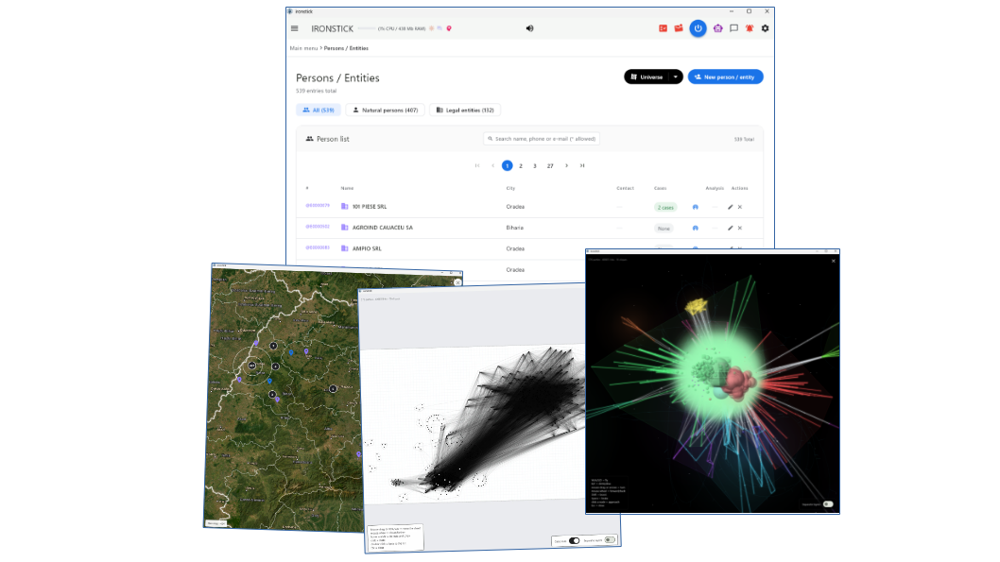
IRONSTICK è anche un DMS completo — uno che ragiona per allegati, timbri e numeri di pagina anziché per cartelle:
Nel processo civile e nel contenzioso su larga scala questo va dritto ai maggiori punti dolenti degli avvocati e del loro personale — tempo, tasso di errore e lavoro manuale:
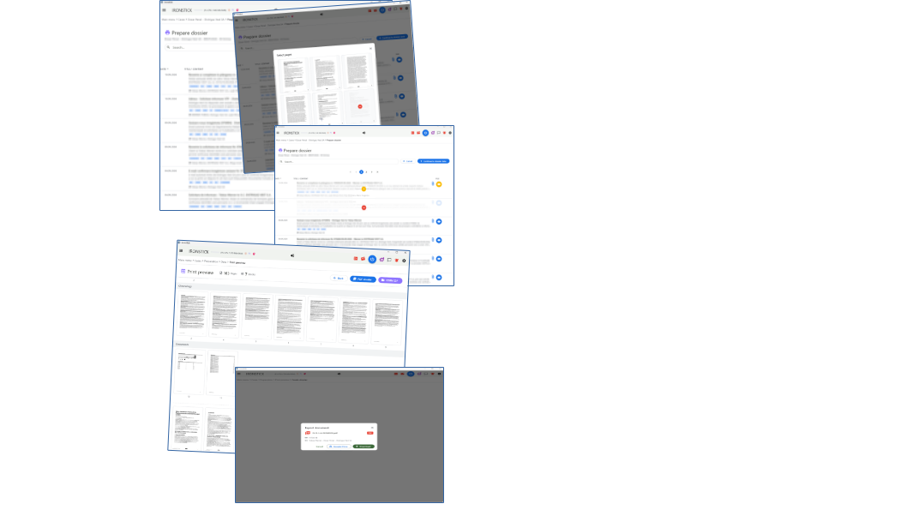
Parte II — IA a piena profondità
Per il lavoro analitico profondo, IRONSTICK offre qualcosa che nessuna cartella di esportazione può dare: un Bridge dal vivo tra la tua IA desktop — Claude Desktop, ChatGPT Desktop, Qwen Desktop e/o Kimi Desktop, ognuno un componente aggiuntivo licenziato separatamente — e l'applicazione in esecuzione. L'IA legge lo stato attuale del fascicolo attraverso oltre 170 strumenti costruiti su misura — cronache, testi integrali, e-mail, scadenze, anagrafiche — e lavora a piena profondità:
Costruito per fascicoli voluminosi — perché un Bridge dal vivo batte qualsiasi esportazione di file. I componenti aggiuntivi Bridge abbonabili esistono per uno scopo: lavorare su grandi bacini di dati che richiedono un'analisi a pieno dettaglio. Sono altamente controllabili da te — interruttori, gate di consenso, licenza per singola IA — eppure ogni dialogo e ogni valutazione poggiano sull'intero bacino di dati di IRONSTICK come fondamento. Quella densità di dettaglio semplicemente non è raggiungibile attraverso un'alimentazione di file convenzionale (esportare file Markdown in una chat IA): persino le più grandi finestre di contesto delle IA contengono solo qualche megabyte di testo per volta —
| Modello / piattaforma | Finestra di contesto (token) | ≈ capacità di testo |
|---|---|---|
| Claude (Opus / Sonnet) | 1.000.000 | ~2.500 KB (2,5 MB) |
| ChatGPT (app, Plus) | 256.000 | ~1.000 KB |
| ChatGPT (app, Pro) | 400.000 | ~1.600 KB |
| ChatGPT (API max) | 1.050.000 | ~4.000 KB (4 MB) |
— mentre un archivio di caso cresciuto nel tempo è molte volte tanto. Il Bridge aggira questo soffitto: invece di stipare i file nella finestra, all'IA vengono consegnati oltre 170 strumenti dedicati con istruzioni rigorose su come usarli, e recupera precisamente i passaggi, i documenti, le e-mail e le scadenze di cui ha bisogno, esattamente quando ne ha bisogno — freschi dal sistema dal vivo, attraverso l'intero bacino. La finestra di contesto porta allora l'analisi, non la zavorra.
E quando il compito è davvero «leggi tutto»: con una singola chiamata l'IA prepara l'intero caso — non troncato, normalizzato con OCR — in un'area di lavoro locale e poi lo legge pezzo per pezzo, senza mai spingere l'intero fascicolo attraverso la finestra. Un caso da 400 documenti diventa interamente leggibile; i limiti di troncamento proteggono la chat, mai la copia preparata. La stessa area dà all'IA un avvio di sessione con una sola chiamata — data, lingua, la tua schermata attuale, il briefing giornaliero, le scadenze e i compiti aperti in un unico protocollo — e una guardia di freschezza annulla qualsiasi estratto preparato nell'istante in cui il fascicolo sottostante cambia: l'IA non può mai argomentare sui dati di ieri.
Un modello linguistico da solo è semplicemente surclassato da un fascicolo cresciuto nel tempo — e una finestra di contesto più grande (1 o 2 milioni di token) non risolve la cosa. Questo è il fraintendimento fondamentale dell'attuale ondata di IA:
IRONSTICK non fa dell'LLM un mulo da soma che trasporta montagne di carta — lo fa diventare un chirurgo di precisione:
In sintesi: un LLM grezzo senza un sistema è un giurista brillante a cui vengono consegnati 5,000 fogli sciolti e disordinati e gli si chiede di trovare la riga decisiva in cinque secondi. IRONSTICK è l'infrastruttura che trasforma quel giurista in uno studio ad alte prestazioni funzionante.
La configurazione è un pulsante per IA nella configurazione; un plugin skill insegna all'IA i tuoi formati di output vincolanti. Ciò che l'IA apprende su un mandato è conservato in una memoria IA condivisa — compatta, legata al cliente, visibile ed eliminabile da te soltanto. E vedi sempre cosa sta accadendo: ogni volta che un'IA legge il tuo fascicolo, il suo simbolo si accende nella barra dei menu.
È qui che diventa più di un chatbot. Poiché i Bridge possono funzionare insieme, metti IA indipendenti sullo stesso fascicolo e le lasci controllare a vicenda il proprio lavoro — con IRONSTICK al centro come banca dati condivisa e coordinatore. Il punto decisivo: Claude, ChatGPT, Qwen e Kimi sono modelli diversi con addestramenti diversi, così ottieni opinioni e approcci genuinamente diversi — una vera seconda opinione, non un modello che annuisce a se stesso. Oggi questi sono tra i modelli di IA più potenti al mondo; IRONSTICK li mette, fianco a fianco, sul tuo caso.
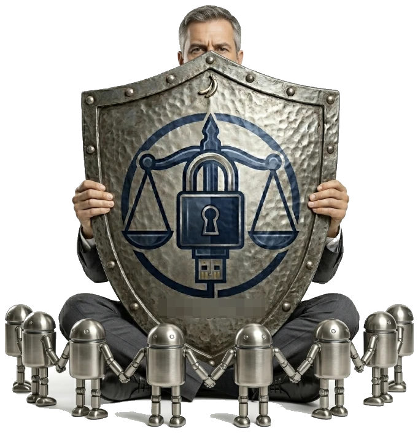
Le dirigi in linguaggio naturale, come un socio che guida due collaboratori: «elabora questo… ora dallo all'altra da controllare… portami la sua valutazione… rivedi.» La bozza, la teoria o l'atto vengono consegnati attraverso IRONSTICK, la seconda IA li rivede criticamente — incaricata di trovare punti deboli, controargomenti ed errori, non di lodare — e la sua valutazione torna a te. Entrambe poggiano sui dati identici del caso, e l'intero scambio è registrato (forensemente pulito).
Questa squadra di consulenza/forense a due teste è ideale per:
Vecchi errori di acquisizione e scansioni maldestre smettono di essere permanenti. Quando l'IA incontra un testo integrale memorizzato che è troncato o rovinato da una cattiva esecuzione dell'OCR, non ci lavora attorno in silenzio — ripara il record: richiede una nuova scansione, accurata al livello di pagina, del PDF originale (scegli tu le pagine nel familiare selettore di pagina), confronta la nuova scansione con il testo memorizzato passaggio per passaggio, ripara solo i danni meccanici della scansione — mai riformulando; numeri, nomi e importi restano intatti — e restituisce il testo integrale riparato. Lo vedi per intero, e solo il tuo clic lo salva. L'archivio diventa più pulito ogni settimana in cui ci lavori.
Dove persino una nuova scansione incontra limiti fisici, l'IA trasforma te nel suo strumento di precisione — Micro-Sourcing Human-in-the-Loop : invece di un inutile «impossibile elaborare il file», apre la voce, indica il punto esatto («pagina 12, in alto») e ti chiede di digitare precisamente le tre parole illeggibili — oppure, entro limiti rigidi (10 MB, 90 pagine), di consegnarle il PDF originale tramite la graffetta così che possa leggere la scansione con la propria visione. Non setacci mai un fascicolo di 200 pagine; vieni chiamato in causa esattamente per lo 0,1 % che una macchina non può risolvere con certezza. I sistemi tradizionali conoscono due stati — «successo» (per quanto sbagliato) ed «errore, elaborare manualmente»; questa è una simbiosi di velocità dell'IA e occhio umano che, in questa forma, non esiste da nessun'altra parte sul mercato.
Parte III — Sovranità: perché non un cloud
L'unico timore giustificato riguardo all'IA nel lavoro giuridico: i modelli inventano citazioni, riportano cifre errate e affermano di aver letto fascicoli che hanno solo sfogliato. Il settore risponde con prompt e disclaimer — IRONSTICK risponde con l'architettura. La tua IA desktop lavora sul tuo fascicolo attraverso oltre 170 strumenti costruiti su misura, e ogni percorso verso un documento in uscita passa per gate deterministici: pura logica, nessuna IA che controlla un'altra IA.
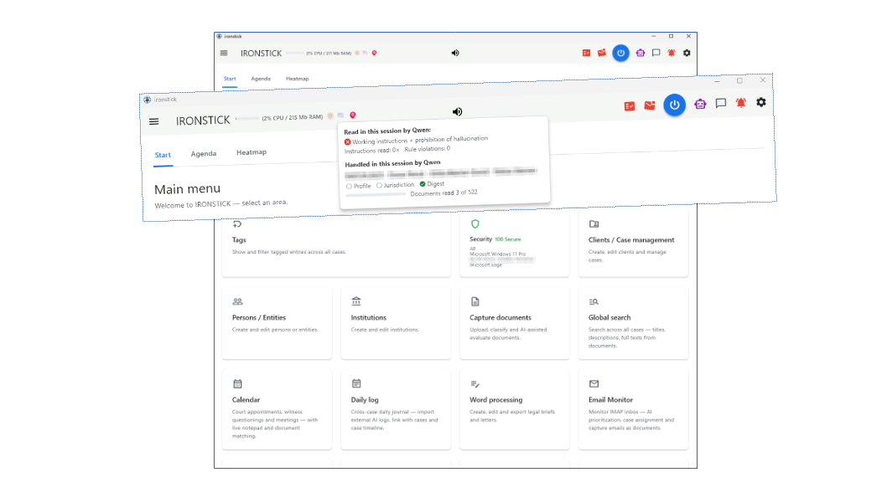
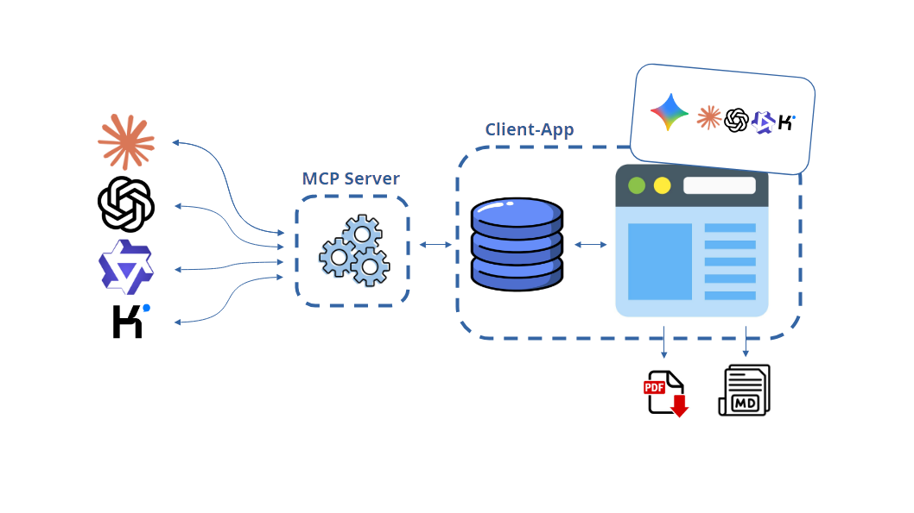
Per quanto ci risulta, nessun software giuridico al mondo impone questa combinazione. Gli strumenti di osservabilità registrano a posteriori, i sandbox recintano l'accesso — IRONSTICK dimostra il lavoro, all'unica interfaccia che l'IA possiede.
Se desidera saperne di più su come funzionano la chat IA interna e il Bridge per Claude, ChatGPT, Kimi e Qwen, e su quali possibilità apre la via IRONSTICK, faccia clic qui.
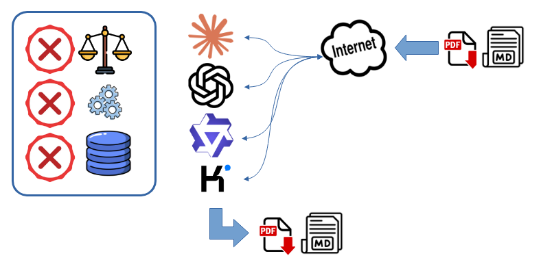
Ancora oggi gli assistenti di IA lavorano senza alcun collegamento alla banca dati con i tuoi casi e i dati dei clienti — l’unica via verso l'IA è il caricamento di file. Anche la maggior parte dei sistemi basati sul cloud funziona secondo questa via classica: nel migliore dei casi sposta file di testo in background — invisibili per l'utente. L'IA attinge quindi, nel migliore dei casi, solo alle informazioni contenute proprio in questi file caricati. Con un po' di fortuna non sono troppo grandi e l'IA tiene conto di tutto; altrimenti le allucinazioni sono programmate. L'IA non può accedere al caso stesso: lavora alla cieca e cerca di ottenere per l'utente il miglior risultato possibile. Questo può portare a valutazioni errate pericolose e ad affermazioni false.
Skill e plug-in aggiuntivi non cambiano nulla. Nel peggiore dei casi aggravano persino il problema: le loro istruzioni corpose occupano una parte considerevole della finestra di contesto prima ancora che l'IA abbia letto il primo documento — e più questa finestra è piena, più l'IA tiene conto del suo contenuto in modo disomogeneo.
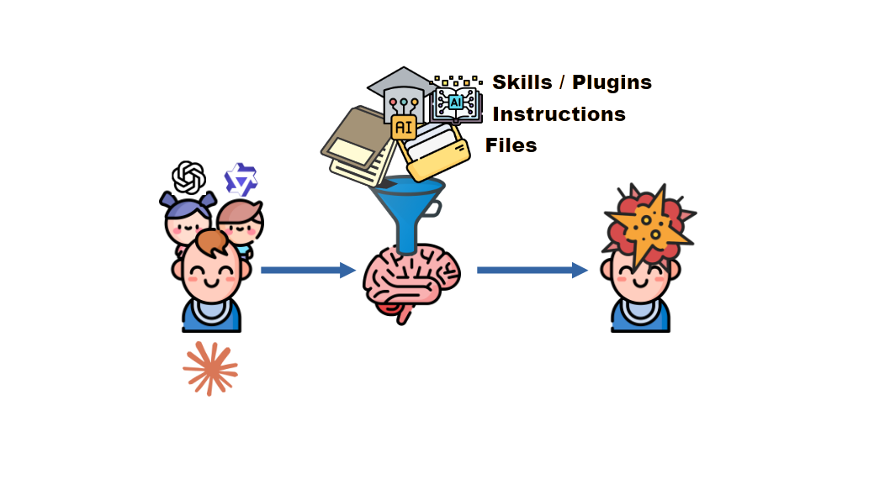
Il modo più semplice è immaginare un’IA come un bambino di 10 anni con una capacità di apprendimento relativamente limitata. Se riempite il cervello di questo bambino con tante conoscenze nell’ambito di una lezione frontale, difficilmente sarà in grado di tenere tutto a mente e potrebbe persino dimenticare fatti o istruzioni importanti.
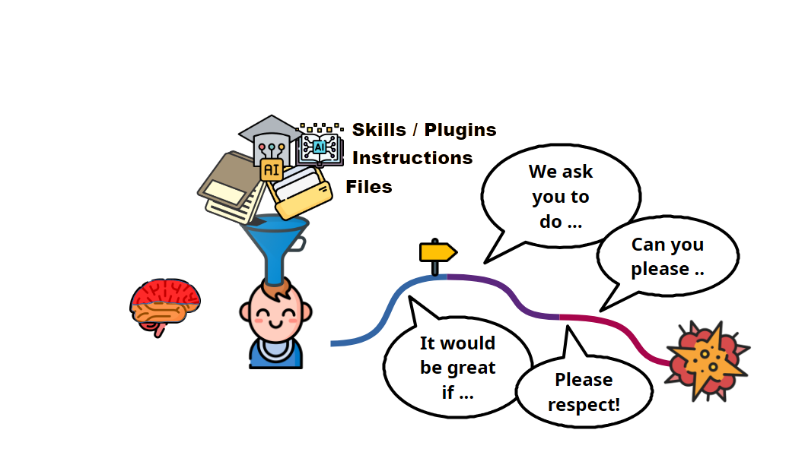
È esattamente ciò che accade oggi con i modelli di IA “best effort”, indipendentemente da come vengono pubblicizzati. Di fatto, la testa dell’IA viene semplicemente riempita con i dati del vostro caso: deve leggere interi dossier, testi lunghi e, per giunta, le lunghe istruzioni, eventualmente anche plug-in e skill. La testa si riempie e si riempie finché arriva il momento in cui non ci sta più nulla e tutto viene compresso, oppure semplicemente non tutto viene più letto. Dopodiché l’IA viene mandata a redigere il vostro atto. Non può che finire male.
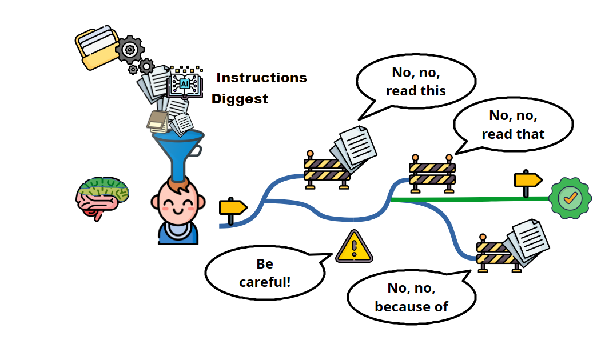
IRONSTICK segue un’altra strada. Le istruzioni sono volutamente brevi, così che anche con i modelli di IA più deboli non occupino mai più della metà della memoria. I dati del vostro caso vengono prima preparati da IRONSTICK e l’IA viene alimentata solo con i dati davvero importanti (immaginateli come dati compressi, senza prosa) e poi mandata per la sua strada. Su questa strada, però, l’IA non viene lasciata sola: le vengono messi a disposizione strumenti e protezioni. Viene guidata verso l’obiettivo da cartelli indicatori e porte di sicurezza.
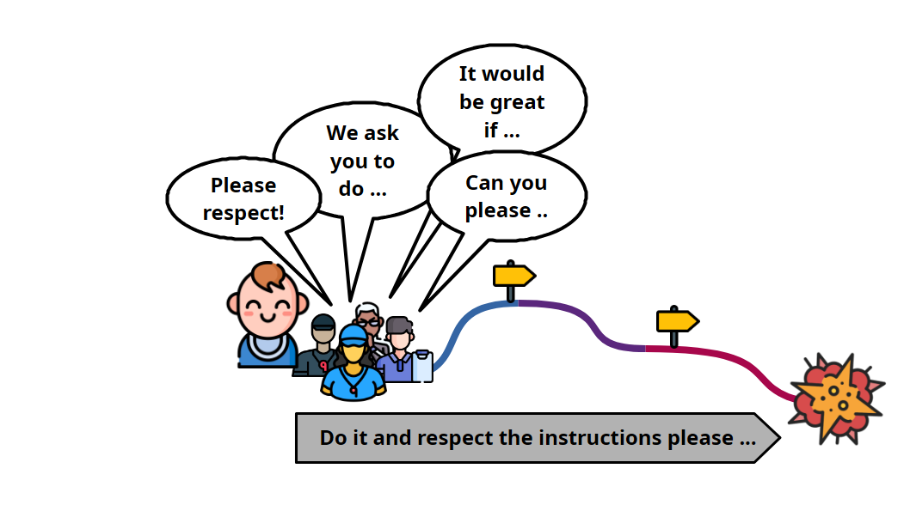
Le offerte classiche “best effort” impartiscono prima all’IA una sorta di lezione frontale e poi la mandano per la sua strada, più o meno con i migliori auguri, con la preghiera (… e la speranza) che si attenga alle istruzioni e non abbia dimenticato nulla.
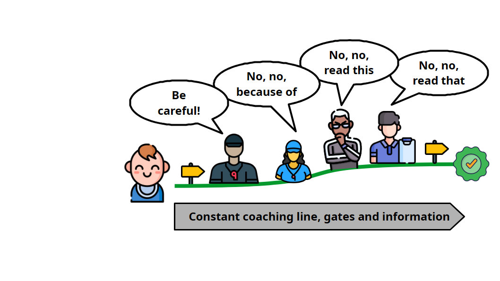
IRONSTICK segue l’approccio di una linea di coaching costante, con blocchi di sicurezza, informazioni aggiuntive, aiuti e strumenti, e verifica così costantemente il percorso e il risultato del modello di IA.
Con un software gestionale in cloud affidi la tua responsabilità e i tuoi dati a estranei — sperando che il loro cloud non prenda mai fuoco. IRONSTICK significa massima sovranità: il sistema è costruito in modo che nemmeno un guasto totale del server — o un dirottamento dell'infrastruttura — possa fermare lo studio.
Le soluzioni SaaS vendono la promessa della sicurezza — questa architettura offre una sicurezza nativa, imposta a livello strutturale. Le classiche soluzioni gestionali cloud e SaaS portano con sé un gigantesco problema strutturale che i loro dépliant pubblicitari preferiscono nascondere: sono fortemente centralizzate. IRONSTICK è democratico e assolutamente decentralizzato.
Il fascicolo resta tuo. L'IA viene ai tuoi dati — non i tuoi dati all'IA. Questa singola frase separa IRONSTICK da ogni piattaforma di IA giuridica in cloud presente sul mercato. Nel 2026 il settore è passato in massa a un unico modello: i fascicoli dei tuoi clienti vivono sul cloud di un fornitore, e un'IA noleggiata da quello stesso fornitore vi lavora sopra. IRONSTICK ribalta quel modello — il fascicolo resta sul tuo hardware, e i tuoi abbonamenti IA vi si collegano attraverso un Bridge controllato e documentato.
Tre argomenti, nell'ordine in cui li classificherebbero i tuoi clienti:
Sempre più avvocati stanno già sperimentando con una chat IA grezza — incollano documenti in ChatGPT e fanno domande. Per un singolo documento breve funziona. Di fronte a un carico di lavoro reale di uno studio si scontra con due muri invalicabili — ed entrambi sono esattamente ciò che IRONSTICK è costruito per rimuovere.
La differenza è semplice: chiacchierare con un'IA, contro un lavoro sul caso difendibile e ripetibile che regge ancora mesi dopo.
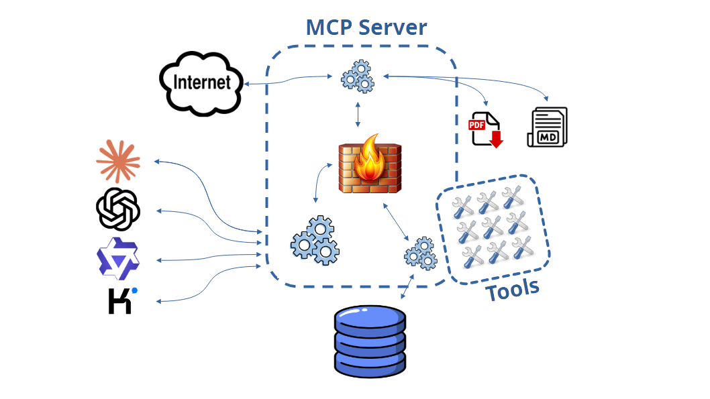
E perché modelli di IA esterni, invece di un modello nostro? Il motivo è economico. Gestire un LLM proprio, davvero utilizzabile, richiederebbe un investimento di 400.000–500.000 € — solo per server, impianti di raffreddamento e infrastruttura — più costi correnti di 70.000–80.000 € all'anno per gestione e manutenzione. E questo non include nemmeno il costo dei tecnici. Per uno studio legale questo semplicemente non ha senso — l'investimento è di gran lunga troppo alto. E se IRONSTICK offrisse invece un proprio servizio di IA in cloud, sarebbe di fatto esattamente la stessa cosa dei servizi esistenti di Claude, ChatGPT, Qwen e Kimi — solo che IRONSTICK non potrebbe mai offrirlo ai loro prezzi. Per pura logica, non ha senso. Ecco perché IRONSTICK collega i tuoi abbonamenti ai modelli più potenti al mondo invece di noleggiartene uno proprio di seconda categoria.
Parte IV — Sicurezza dei dati: i tuoi dati, le tue regole
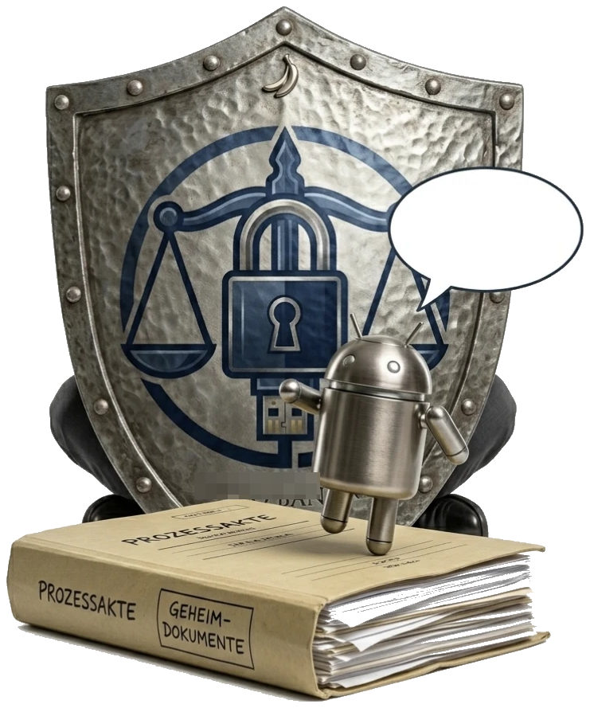
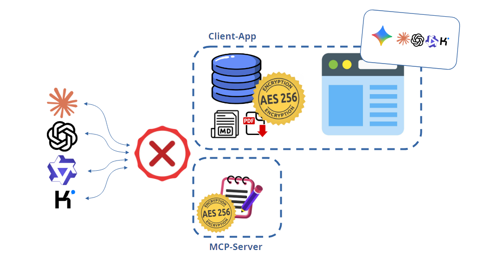
Tutti gli strati di protezione del capitolo 11 sono attivi fin da subito — senza configurazione e senza un interruttore che possa essere disattivato per errore: dati a riposo crittografati AES-256 — banca dati, ogni documento, la configurazione e l'intero spazio di lavoro dell'IA; in parole povere: nessun dato del caso giace non crittografato sul tuo disco — nemmeno i file di lavoro dell'IA. Accesso in fase di esecuzione solo con il codice dell'app authenticator. Dati in movimento solo come tuo atto deliberato — ogni percorso documentato nella dichiarazione GDPR inclusa nel prodotto.
Il software legale in cloud ti vende la promessa che qualcun altro tenga al sicuro i tuoi dati. Qui la protezione fa parte della costruzione, sul tuo hardware, e puoi verificare ogni strato tu stesso.
Parte V — Crescere con lo studio
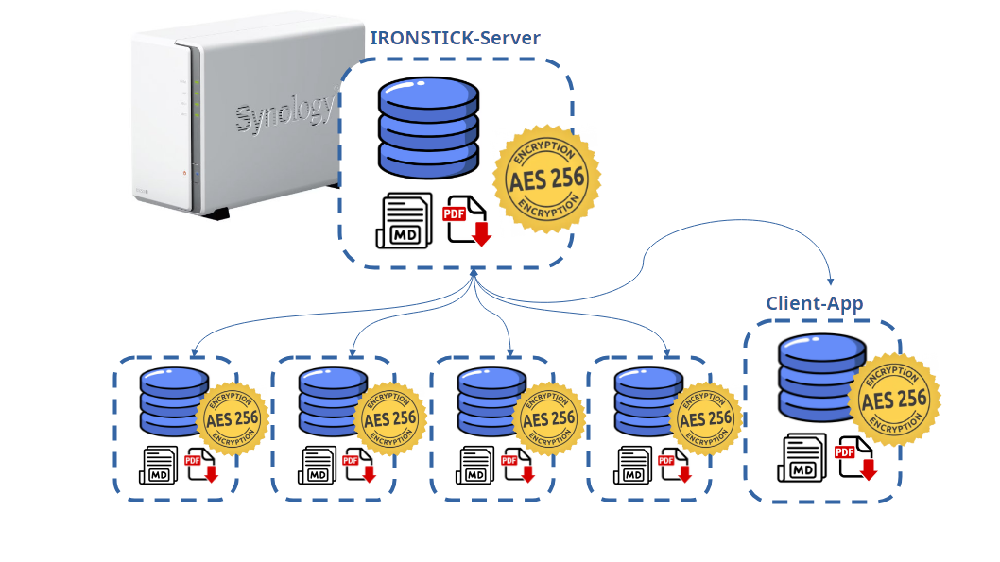
Per gli studi con più avvocati, IRONSTICK offre l'IRONSTICK SERVER — un componente aggiuntivo licenziato separatamente che trasforma postazioni indipendenti in uno studio multiutente coordinato, senza un cloud e senza rinunciare al fascicolo locale. Gira come pacchetto nativo su un NAS Synology — le piccole, economiche scatole da ufficio a manutenzione quasi nulla che già siedono in migliaia di studi legali — su qualsiasi modello attuale, interamente all'interno della tua rete. Il server non contatta mai internet, non contatta mai il fornitore e non trasporta alcun traffico IA.
Perché un NAS Synology — e perché non è un progetto IT. Abbiamo scelto Synology deliberatamente perché queste scatole sono plug and play: colleghi corrente e rete, e funzionano e basta. Installare il pacchetto server IRONSTICK su di esse è fatto in tre minuti e poi gira semplicemente — nessuna console, nessun file di configurazione, nessun amministratore. Le postazioni sono altrettanto poco esigenti: l'installer è una configurazione completamente guidata senza conoscenze IT e senza lunghi questionari — avvialo, inserisci la chiave di licenza, fatto. Client e server si trovano automaticamente nella rete; nessuno digita un indirizzo. E uno studio a scrivania singola non ha affatto bisogno di un NAS — il server è un componente aggiuntivo opzionale per gli studi con più avvocati.
Rilasciare un caso è un atto deliberato, mai un effetto collaterale. Il titolare condivide il caso dall'interno dell'app; esso viaggia verso il server in un trasferimento a due fasi — prima i metadati, poi il contenuto del fascicolo, così che un trasferimento interrotto non lasci mai dietro di sé un mezzo caso — e i file di grandi dimensioni sono indirizzati per contenuto, così che documenti identici viaggino e siano memorizzati una sola volta. Il server assegna ID interni nuovi a tutto ciò che memorizza: un caso ricevuto non può mai collidere con dati già presenti sulla postazione di un collega. I colleghi vedono il caso condiviso sulla propria schermata dei casi-server e vi si iscrivono; l'iscritto riceve una copia completa nel proprio fascicolo locale e vi lavora con il sistema completo — ricerca, assistente, stesura IA, tutto. Il titolare può revocare la condivisione in qualsiasi momento, l'amministratore può terminare centralmente qualsiasi iscrizione, e ogni condivisione, iscrizione ed esportazione è registrata con data, ora e indirizzo. I documenti contrassegnati come segreti sono esclusi per design — non raggiungono mai il server.
Il mega vantaggio: lavoro di squadra assistito da IA in simultanea su un caso. Ogni iscritto lavora la propria copia con il sistema completo — compresa la propria IA desktop. Più avvocati possono quindi attaccare lo stesso caso nello stesso momento, ciascuno con il proprio LLM che legge il fascicolo a piena profondità — e inviare al titolare del caso messaggi e valutazioni finite direttamente dalla sessione IA: una tabella delle contraddizioni da una scrivania, una bozza irrobustita dalla successiva, una valutazione del rischio dalla terza, tutte che rifluiscono al titolare mentre il lavoro accade. Quando una scadenza si profila improvvisamente o un'udienza viene anticipata, un intero studio può convergere su un unico caso da un giorno all'altro — analisi parallele, flussi di lavoro divisi, un titolare che mantiene il fascicolo.
Ogni scrivania IRONSTICK mantiene testi normativi verificati come Markdown a testo integrale, ogni voce contrassegnata con giurisdizione, link alla fonte e data di revisione. L'assistente e i Bridge IA desktop raggiungono questa biblioteca attraverso tre strumenti propri: una ricerca fuzzy (la giurisdizione è un dato obbligatorio — gli ordinamenti giuridici non vengono mai mescolati), il richiamo alla lettera del testo memorizzato (l'IA cita la formulazione verificata, non la sua memoria di addestramento) e la presentazione di nuove fonti (ogni volta che l'IA incontra online una fonte giuridica rilevante, archiviarla è un dovere, non un'opzione — solo il link; l'applicazione scarica, converte e verifica il testo da sola, e tu lo rilasci attraverso il gate di revisione del monitor dei dati).
È questo che rende la banca dati dinamica: cresce dal lavoro quotidiano dello studio. Ogni sessione di ricerca di ogni collega — umano o assistito da IA — la alimenta. Con il server di studio, ogni norma rilasciata viene deduplicata centralmente (la stessa fonte aggiorna la voce; una versione più recente dello stesso testo vince, quella superata viene archiviata, non persa) e rispecchiata su ogni scrivania. Le date di revisione la mantengono onesta: le voci non controllate da oltre un mese diventano rosse su ogni scrivania e nell'amministrazione web, e se un contributore è assente, il server riassegna le sue voci in modo uniforme tra gli utenti attivi — il dovere di revisione non muore mai con una vacanza. Il risultato: tutte le IA dello studio argomentano da un'unica biblioteca normativa verificata e viva — verificata una volta da un collega, citata alla lettera ad ogni scrivania, mantenuta sotto un dovere comune — invece che ogni scrivania recuperi di nuovo dal web aperto e si fidi di qualunque cosa sia tornata. Ed è pensiero da civil law dall'inizio alla fine: l'autorità è il testo normativo codificato, citato alla lettera — esattamente come i tribunali dell'Europa continentale si aspettano di sentirsi argomentare.
Disponibile solo in connessione con il server di studio: la Central Scan App, un programma autonomo per il PC dell'impiegato di segreteria — nessuna installazione di IRONSTICK necessaria lì. Fino a tre licenze Central Scan possono essere acquisite per server — ciascuna licenziata separatamente — così che fino a tre postazioni di scansione possano funzionare per ufficio; tutte possono persino lavorare la stessa cartella di acquisizione in parallelo senza collidere (un documento aperto da un impiegato viene automaticamente bloccato e reso grigio per gli altri).
Localmente, IRONSTICK misura il tempo di lavoro automaticamente come effetto collaterale del lavorare: nessun cronometro, nessuna disciplina di start/stop. Il tempo è derivato dall'attività effettiva nell'applicazione, attribuito al caso in cui stai lavorando, con il tempo di inattività limitato così che una finestra aperta durante il pranzo non addebiti nulla a nessuno. Ogni scrivania ha la propria pagina dei tempi — oggi, 7, 30, 90 giorni o tutto; per caso, per cliente, giorno per giorno con barre.
Con il server, ogni postazione riporta queste misurazioni in background — ogni cinque minuti, come totali giornalieri compatti per caso (compreso il nome del cliente), con i giorni mancanti reintegrati automaticamente; una scrivania che si aggiunge più tardi consegna la propria cronologia completa, così che il quadro di tutto lo studio sia intero dal primo giorno. La pagina Tempi dell'amministrazione web è una copia fedele della pagina dei tempi desktop, estesa da un selettore: un singolo utente, oppure TUTTI — l'intero studio. Tempo per caso, per cliente e per giorno, attraverso ogni scrivania — una base oggettiva per fatturazione, capacità e decisioni gestionali, prodotta senza che nessuno compili un foglio delle ore.
Il sistema cresce con lo studio. Partito come avvocato singolo, un team di cento persone oggi — IRONSTICK cresce insieme. Cosa serve? Un client desktop IRONSTICK all'inizio come avvocato singolo, forse un Bridge per Claude/GPT. Poi due avvocati uniscono le forze: si licenziano un client in più e un Bridge in più, più l'IRONSTICK SERVER — fino a cinque postazioni sono incluse. Da quel momento in poi, ogni collega aggiuntivo significa un client e un Bridge e, dalla sesta postazione, un ulteriore posto server. Nessun grande investimento verso un futuro lontano — licenzia solo ciò di cui hai bisogno proprio ora. E se il team si riduce, compri semplicemente meno licenze.
Parte VI — Affidabilità: autoriparazione, backup, quasi nessun IT
Un server che coordina un intero studio deve poter morire senza portarsi via lo studio — e questo può. L'intero stato del server vive in un'unica cartella di dati sul NAS: includila nel backup del NAS (ad es. Synology Hyper Backup) e un'unità morta viene ripristinata in tre passaggi — installa il pacchetto sul sostituto, rimetti la cartella, avvia. Tutto torna esattamente com'era e le postazioni si riconnettono da sole. E poiché la verità del sistema è comunque decentralizzata — ogni postazione mantiene il proprio fascicolo locale completo, le copie a cui è iscritta, il proprio mirror della biblioteca giuridica e i propri backup — persino il caso peggiore, una perdita totale del NAS senza alcun backup, si autoripara: le postazioni si registrano di nuovo automaticamente, i titolari riemettono automaticamente i loro rilasci di caso (controllati due volte al giorno), le copie a cui si è iscritti sono protette per 14 giorni invece di essere scartate, la biblioteca giuridica ricresce dai mirror delle postazioni stesse, e i trasferimenti di caso in sospeso non possono perdere dati per design. Per esigenze ancora più elevate, lo stesso pacchetto gira immutato sui grandi modelli Synology completamente ridondanti — ridondanza dei dischi RAID, alimentatori ridondanti, coppie in High-Availability con failover automatico. Trasferire l'ufficio è altrettanto poco drammatico: porta con te le postazioni, imposta il NAS al nuovo indirizzo, collega tutto alla LAN — Plug and Play, fatto. Le postazioni ritrovano il loro server da sole; nessun indirizzo fisso, nessuna riconfigurazione, nessun appuntamento IT — e nessun tecnico costoso, mai.
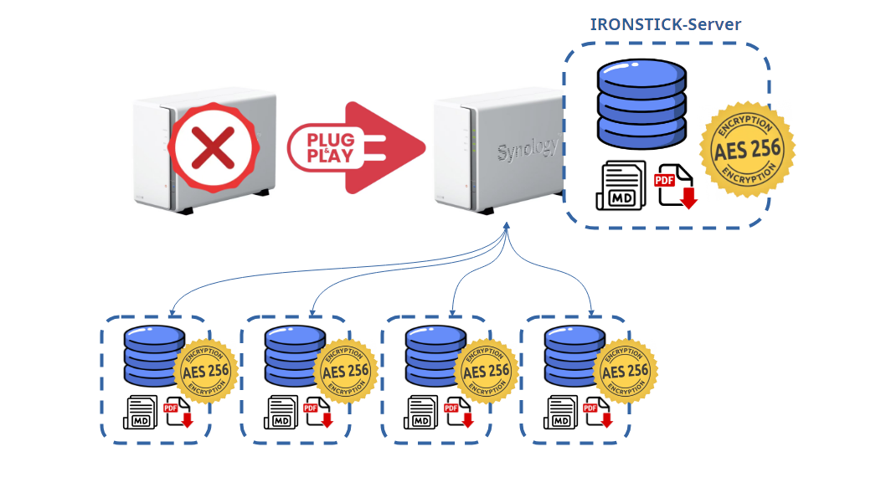
Manutenzione: il sistema è assolutamente autoriparante e quindi estremamente a bassa manutenzione. Gira in modo assolutamente stabile e fluido anche su hardware che non è più del tutto aggiornato. E grazie all'opzione di backup, in caso di emergenza reinstalli semplicemente e riporti indietro il backup.
Il sistema si ripara da sé. L'unica dipendenza che resta è quanto in fretta l'amministratore cammina fino al negozio per un dispositivo sostitutivo, rimette il software e lo collega alla LAN (server) — o riporta indietro il backup (postazione). Tutto il resto si prende cura di sé. E anche mentre il server è giù — per qualunque motivo — le postazioni continuano semplicemente a lavorare localmente sui propri computer: ogni avvocato ha il fascicolo completo sulla propria macchina, così nulla si ferma.
Un'obiezione legittima: IRONSTICK gira sul tuo hardware, quindi non c'è un fornitore cloud il cui help desk risolve le cose quando un disco locale muore. Vero — e deliberato: nessuno a distanza tiene i tuoi fascicoli, e nessuno a distanza può perderli, leggerli o chiuderti fuori. Ciò che questo richiede davvero a uno studio senza amministratore è più piccolo di quanto sembri.
L'affinità con l'IT richiesta è quella di qualsiasi postazione Windows — non di più. Ciò che IRONSTICK rimuove è la dipendenza dal data center di qualcun altro; ciò che chiede in cambio è una chiavetta di backup che tu usi davvero.
Parte VII — Nella pratica
| Minimo | Consigliato per un lavoro pienamente fluido | |
|---|---|---|
| Sistema operativo | Windows 11, 64-bit | Windows 11, 64-bit, aggiornamenti correnti |
| Processore | Moderno x64 a 4 core (ad es. Intel Core i5 / AMD Ryzen 5) | 6–8 core — il riconoscimento del testo gira su più pagine in parallelo, e il riconoscimento vocale offline beneficia direttamente di ogni core |
| Memoria | 8 GB RAM | 16 GB RAM — comodo margine per PDF di grandi dimensioni, costruzione di dossier e trascrizione audio fianco a fianco |
| Archiviazione | SSD con 20 GB liberi | SSD NVMe con 100+ GB liberi — l'archivio dei fascicoli, la ricerca a testo integrale e la produzione di PDF sono intensivi sul disco; un SSD veloce si sente ogni singolo giorno |
| Display | 1920 × 1080 | 1920 × 1200 o superiore — le schermate dei casi usano generosamente lo spazio verticale |
| Scheda grafica | Nessuna scheda grafica dedicata richiesta — qualsiasi grafica integrata è sufficiente | |
| Connettività | Internet solo per l'IA esterna, gli aggiornamenti normativi, l'e-mail e le mappe — il fascicolo, la ricerca, i documenti e l'assistente locale girano completamente offline; una porta USB libera per la sincronizzazione del tablet | |
Opzionale: un tablet Android (Android 11 o più recente, 64-bit, schermo in formato tablet) sullo stesso fascicolo tramite sincronizzazione via cavo, e il tuo account IA (per l'IA esterna in-app e/o un'IA desktop — Claude Desktop, ChatGPT Desktop, Qwen Desktop o Kimi Desktop) — senza di esso, IRONSTICK gira semplicemente come un sistema completamente locale.
| Requisito | |
|---|---|
| Dispositivo | Qualsiasi NAS Synology con DSM 7.0 o più recente — ARM o Intel; il pacchetto include binari nativi per ARMv7, ARM64 e x86-64 |
| Prestazioni | Scritto deliberatamente così snello da girare pulitamente anche su un'unità di fascia base di dieci anni: verificato su un DS214se del 2014 con una CPU ARM single-core e 256 MB di RAM. Se gira lì, gira su ogni Synology della gamma — qualsiasi modello attuale ha un generoso margine |
| Memoria / CPU | Nessun requisito dedicato oltre al NAS stesso — il server rimane inattivo su pochi MB e non scansiona né indicizza mai in background |
| Archiviazione | Poche centinaia di MB per il pacchetto e la biblioteca giuridica; i pacchetti di caso condivisi crescono solo con ciò che effettivamente condividi |
| Rete | Solo LAN dell'ufficio; una porta TCP (47712). DSM, Web Station e le porte 80/443 restano completamente intatte — il server non si connette mai a internet |
| Amministrazione | Qualsiasi browser sulla LAN; propria password di amministrazione; chiave di licenza inserita una volta |
IRONSTICK non è stato costruito per impressionare in una demo. È stato costruito perché alle 19:00 tu chiuda il coperchio — con il fascicolo letto, la bozza irrobustita, la scadenza rispettata, e la prova di tutti e tre nel sistema.
IRONSTICK è licenziato per componente. Prendete solo le parti che vi servono e ne aggiungete altre man mano che lo studio cresce. Qui trovate i componenti e come ciascuno è licenziato — gli importi sono nella pagina dei prezzi.
| Componente | Licenziato per |
|---|---|
| IRONSTICK Client (applicazione base) | per utente / postazione |
| Bridge singolo — Claude, ChatGPT, Qwen o Kimi | per utente / postazione |
| Bundle di tutti i Bridge — tutti e quattro insieme | per utente / postazione |
| IRONSTICK Office Server (incl. fino a 5 client) | per studio / server |
| Client aggiuntivo sul server (dal 6°) | per client aggiuntivo |
| Central Scan App (max. 3 per server) | per utente / postazione di scansione |
Scarica il software: Client-App, Bridge, Office Server e Central Scan App sono disponibili nella pagina di download — dove trovi anche l'ordine di installazione, le regole di licenza e il modello per richiedere le chiavi di licenza.
IRONSTICK o una demo ti interessano? Scrivici.
Scansiona il codice per salvare la nostra scheda contatto — telefono, e-mail e sito.
Contattate direttamente via WhatsApp o Telegram — anche una chiamata è benvenuta. Lingue parlate: tedesco, inglese, rumeno.
IRONSTICK è un software per la pratica legale. Questo sito ha finalità puramente informative e non costituisce consulenza legale.
© 2026 IRONSTICK.